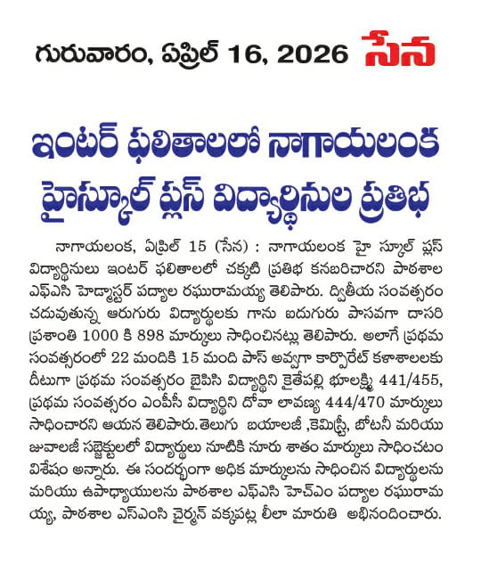

top score :
591 marks secured by Ponugumati Hasini.

Inter Results 2025-26
100% Pass Percentage achieved.Top Marks: 904 secured by Prasanthi Dasari.
Junior BiPC State Topper: Kaithepalli Boolakshmi secured 441/455 marks.
MPC District First: Dovari Lavanya secured 444/470 marks.

X Class Results 2025-26
100% Pass Percentage achieved.District Second among Government
Top Score: 591 marks secured by Ponugumati
Second Highest Score: 584 marks secured by Chapala Mokshajna.
Third Highest Score: 579 marks secured by Sanaka Teja Sai.
Four students secured IIIT seats from PM SHRI ZPHS Plus Nagayalanka.
